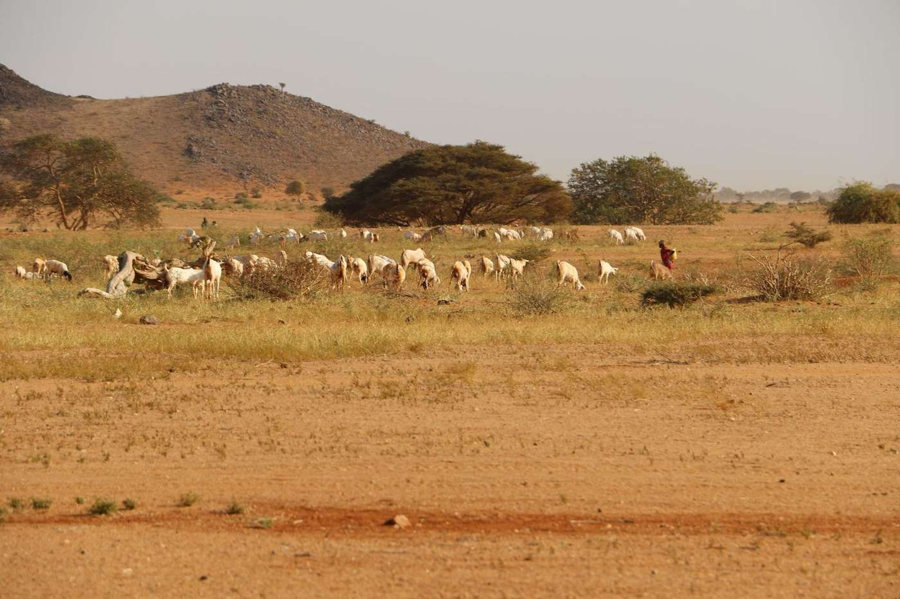
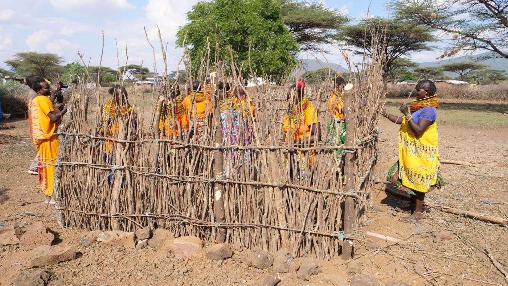

Demo page
Made to feel Kenyan.
Thirteen ideas, each one working, so you can try it before deciding. None is on the real site. To add one, tell me its letter. Every idea says who has to check it first.
Kiswahili switch
A small EN / SW switch in the header. Every page changes language in place, and the choice is remembered. English and Kiswahili are Kenya's two official languages.
Educate · Protect · Empower
Every child deserves a future.
We help vulnerable children across Isiolo County get to school, stay safe and grow into confident, independent young people.
The Kiswahili here is a first draft to show the idea. It must be read and corrected by a fluent speaker (Cliffe or Josephine) before any of it goes on the real site, above all the safeguarding wording.
Saa ya Isiolo: the Swahili clock
In Kiswahili the day is counted from sunrise, so 7 in the morning is “saa moja”, the first hour. The time label can show both, live from the real clock in Isiolo.
On the dial, the dark numbers are the clock you know. The red numbers are the Swahili hours: six hours apart, because the count starts at sunrise.
A greeting that fits the hour
The first line a visitor sees greets them the way people do in Kenya, by the time of day in Isiolo, with the English under it.
Habari ya asubuhi. Karibuni.
Good morning from Isiolo. You are welcome here.
Giving the way Kenyans pay
Most giving inside Kenya happens on a phone with M-Pesa. Kenyan sites show the number large, with the same short steps people already know from their phone menu.
- Open M-Pesa on your phone
- Choose Lipa na M-Pesa
- Choose Pay Bill
- Enter the business number
- Account: your name
- Enter the amount and your PIN
- Bank: the Foundation's bank
- Account name: QOP Hope Foundation
- Account number and branch as on the right
- Send us the slip so we can receipt you
- Give by card or PayPal from any country
- We convert to Kenya shillings
- You get a receipt by email
- Fees go straight to the school
Placeholder. The Foundation's real number goes here.
No logo of any phone company or bank is used: the name of the service in plain words is enough, and it avoids passing off as them.
Talk to us on WhatsApp
In Kenya people expect to message an organisation on WhatsApp or call it, not fill in a form. A button that follows you down the page, a number in +254 form, and office hours in East Africa Time.
Wasiliana nasidraft
Message or call the Foundation
A proverb, where it fits
Kiswahili proverbs (methali) are part of everyday speech in Kenya. One line, with its meaning, above the giving section or at the foot of a page.
Peace, in the languages of Isiolo
The Foundation grew from peace work. One word, in each language spoken in Isiolo, shown with the name of the language. It tells every family: this place is yours too.
Only the Kiswahili word is certain. The others are the words most often given for “peace” in each language and are marked “to confirm”. A wrong word here would do more harm than no word.
The school year and the rains
A year in Isiolo at a glance: the three school terms, and the two rainy seasons that decide whether a family's animals, and its school fees, are safe.
The school ladder, in Kenya's own terms
Kenyan schools now follow the competency-based system: pre-primary, primary, junior school, senior school. Using these names, and not “elementary” or “high school”, is what makes a Kenyan parent feel the site was written for them.
Proof you are real
Kenyan donors and schools look for the registration number first. A plain strip near the foot of every page: how the Foundation is registered, its number, and where the yearly report and accounts can be read.
placeholderplaceholderfrom 2027from 2027Kind to a small data bundle
Many people in Kenya pay for data by the megabyte and read on a phone. A switch (on by itself when the phone asks to save data) that keeps the words and one photo, and holds back the moving pictures and the map until asked.
Five moving photos at the top and two photo bands.



5 photos, changingMeet the place first
Before any appeal: five of Cliffe's photographs to swipe through, each with one plain line about life in Isiolo. People, land and animals shown with dignity, no faces of children, no village named.



Photos: Cliffe Wasike. The lines are placeholders written from what the photos show.
Respect: things to leave out
What would make a Kenyan reader wince, shown side by side with what to do. None of the left-hand column is on the site today.
National symbols are protected by law and are not ours to decorate with.
The site looks Kenyan because of what it shows, not because it borrows the flag.
This is how postcards talk, not how Kenyans greet one another.
Plain, warm and correct. Checked by a speaker.
Isiolo is home to Borana, Somali, Turkana, Samburu and Meru families. No one community is the picture of the county, and none is cast as the cause of trouble.
The Foundation serves every child. The wording should let every family see itself.
It takes dignity from the children and breaks the safeguarding promise on the About page.
Kenyan-led change, with supporters standing beside it.
These four are the cautions I am sure of. The research note lists more, each with its source.